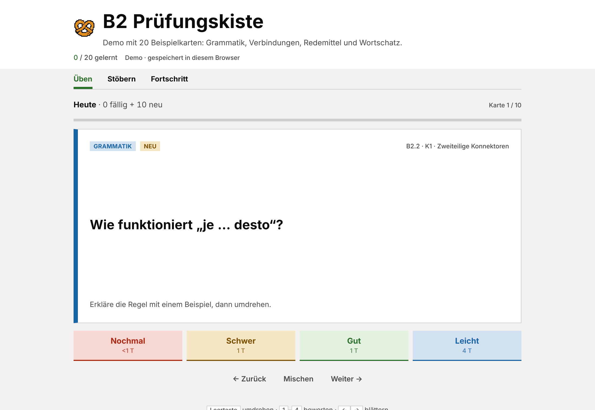
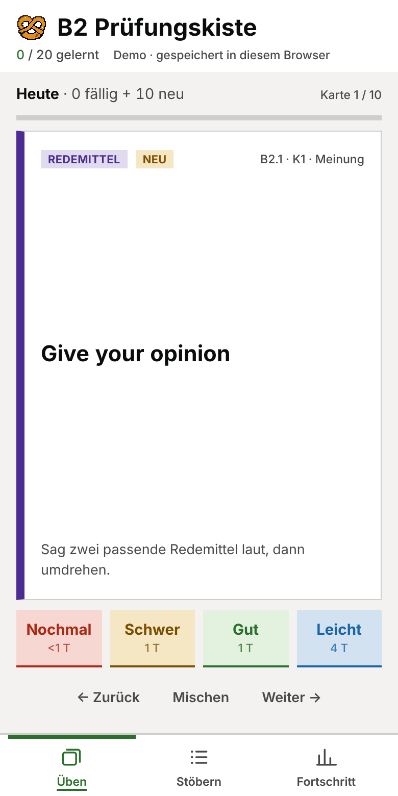
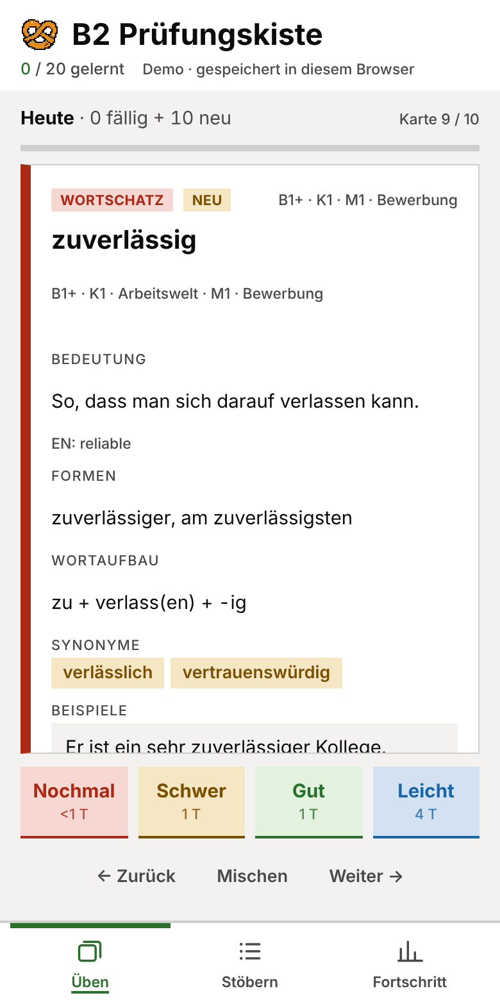
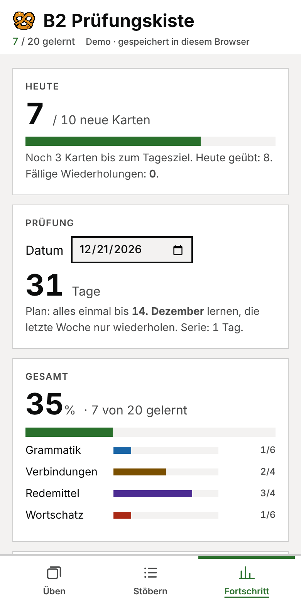
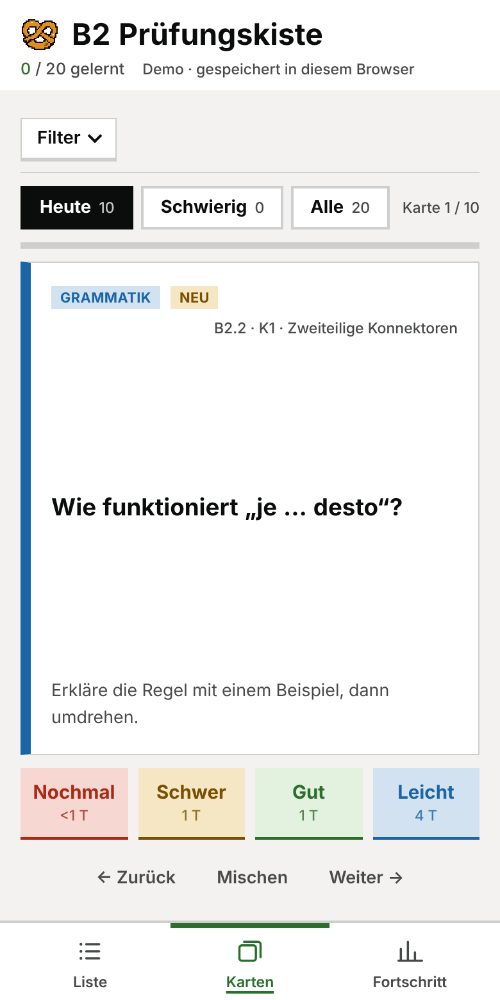

Case study · Personal project
B2 Prüfungskiste: one study box for my German B2 exam
I needed to learn three textbooks' worth of grammar, phrases and vocabulary before a fixed exam date. I built a flash-card app with Claude that tells me what to study each day, works on my phone and keeps my progress in sync.
- My role
- Product owner and designer: I set the goals and rules, chose between the options, reviewed every change.
- AI's role
- Claude (Claude Code) researched options, wrote the code, took screenshots and checked contrast.
- Built with
- One HTML file (HTML, CSS, JavaScript), published as a private Claude artifact with a small database for progress.
- When
- November 2026, in daily use until the exam in December 2026.
- Scale
- 1,215 cards in four categories, from three textbooks.
Try the demoRead the decisions
The demo is the real app with 20 sample cards I wrote for it. The textbook content is copyrighted, so it stays private.

The problem
The B2 exam tests grammar, set phrases for speaking and writing, and a large vocabulary. My material was spread over three textbooks and their word lists. I had three problems:
- Too much to review by hand. Over 1,200 items, and no way to know which ones I was about to forget.
- A fixed deadline. I needed a daily amount that would get me through everything before the exam, with time left to revise.
- Short sessions on the phone. I study in short sessions, often on my phone, so the phone layout mattered most.
Three decisions
1. Let the exam date set the daily goal
The app uses spaced repetition, a simplified version of the SM-2 method Anki uses. After each card I rate how well I knew it, and the app schedules the next review: sooner for hard cards, later for easy ones.
On top of that, the daily goal comes from the calendar: cards not yet learned ÷ days left until one week before the exam, at least 10 a day. The last week is kept free for revision. If I miss a day, the goal goes up a little; I never have to plan it myself.



2. Borrow proven design foundations, add a thin personal layer
I didn't want to invent colours, type sizes or focus states. The app stands on the public foundations of the GOV.UK Design System and the UK Parliament Design System: dark text on light surfaces, clear borders, square corners and the yellow focus state for keyboard users.
My own taste sits on top as a thin layer: an icon I chose (a pixel pretzel), one accent colour, and colour used sparingly (about 60% neutral surfaces, 30% text and structure, 10% accent). Every text colour is checked with a script against WCAG 2.2 AA (at least 4.5:1), in light and dark mode.
I made this a reusable Claude agent (design-foundations), so every later design change starts from the same rules.
3. Organise the app by task, not by view
The first version had three equal tabs: Liste (list), Karten (cards) and Fortschritt (progress). In use, it felt wrong: on the phone, the card sat below a filter button and a row of deck modes.
I asked Claude to research navigation guidance before proposing a fix. The guidance agreed:
- A bottom tab bar is for 3–5 separate destinations (Material Design).
- Different views of the same content belong in a segmented control, not in the tab bar (Apple HIG).
- Put the most-used section first (GOV.UK Tabs).
Liste and Karten shared every filter, so they were two views of the same content, not two places. Claude proposed two options. I chose to organise by task:
| Tab | Job | What changed |
|---|---|---|
| Üben (practise) | Do today's review | Opens on today's cards. No filters, so the card gets the space. |
| Stöbern (browse) | Look things up, study one chapter | Filters, search and the list, plus “Diese 66 Karten üben” to practise exactly that selection. |
| Fortschritt (progress) | Check where I am | Unchanged. “Diese Karten jetzt üben” starts a session with the hardest cards. |

The study screen lost two layers of controls. The lesson went back into the design agent as a new rule, with this app as the worked example, so the next project starts with it.
Working with AI: who did what
| Step | Me | Claude |
|---|---|---|
| Goals and rules | Set the goal, the exam plan, the privacy rules and the design direction | Wrote them down as project rules (CLAUDE.md) so every session follows them |
| Research | Asked the question, judged the sources | Searched design-system and platform guidance, summarised it with links |
| Options | Chose one, or asked for changes | Proposed 2 options with a recommendation and trade-offs |
| Build | Reviewed screenshots and the running app | Wrote the code, tested phone and desktop in a headless browser, checked contrast |
| Release | Approved publishing | Committed, published to the same private link so progress was kept |
| Learning | Approved which lessons to keep | Added them to the design agent |
Where I corrected the AI: the first icon was a sprite that looked like a well-known game character. Fine for a private app, not for a public page, so I drew a pixel pretzel instead. Claude also caught the reverse: it noticed the source repository had been made public by mistake, and flagged the copyright risk before building this site.
Privacy by design
- The textbook content stays in a private repository and a private app link.
- This page and the demo use only sample cards I wrote. A small export script builds the demo from the real app and stops with an error if any textbook name is still in it.
- In the demo, progress stays in your browser. Nothing is sent anywhere.
Result and next steps
- I use it every day. Opening the app and reviewing today's cards takes one tap.
- The repo is set up for more apps (a Chinese one is planned), each with its own rules, so changes to one can't break another.
- Next: take the accent colour from the new pretzel icon.